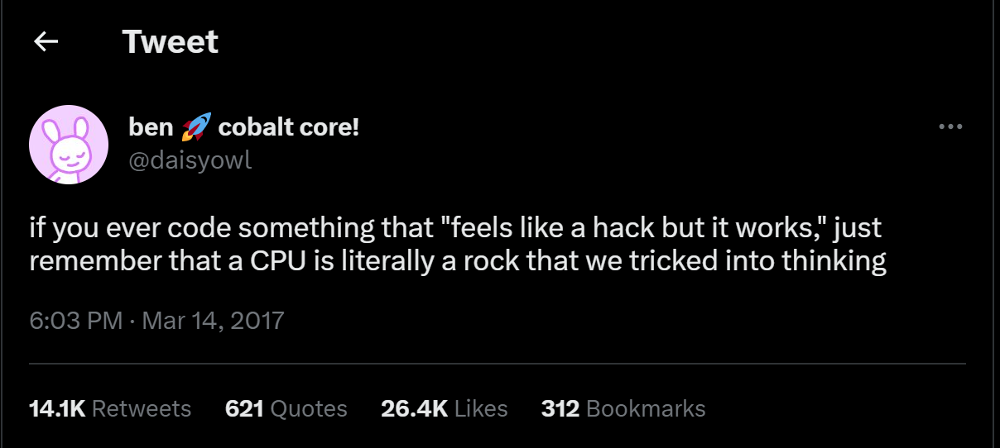
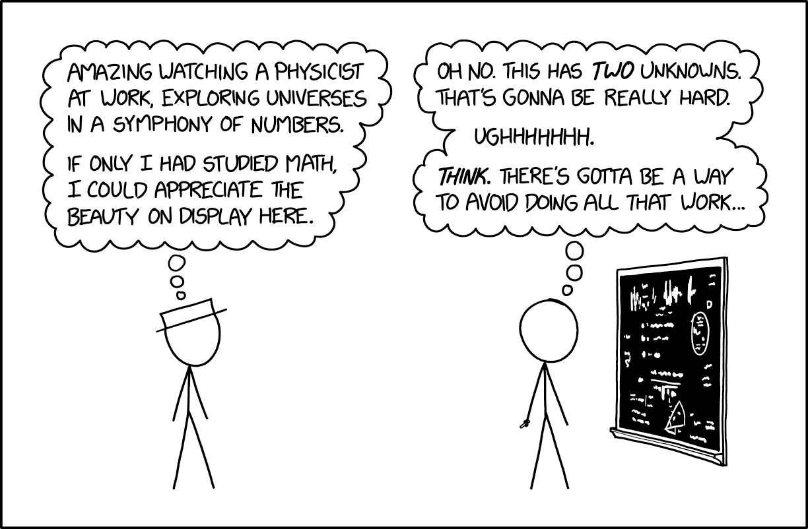

Welcome to Math Bytes: Where Math and Computer Science Intersect
"Mathematics is the most beautiful and most powerful creation of the human spirit."
- Stefan Banach
About Me
My name is Dallin Stewart, and I’m a senior at Brigham Young University studying applied math (Applied and Computational Math Emphasis or ACME for short). It is a relatively new program in my college that focuses on making technology work in the 21st century with algorithms for machine learning and techniques for finding insights from data.
I grew up in Alameda, California as the oldest of four. Since middle school, I have had a passion for Ultimate frisbee, playing all kinds of board games and card games late into the night, and learning about the world and how it works. I started college at BYU studying Electrical Engineering where I loved spending time with friends and watching movies. After my freshman year I took a two year break to volunteer in Zacatecas, Mexico and Tempe, Arizona as a missionary for the Church of Jesus Christ of Latter-day Saints. By the time I started school again I had developed an enthusiasm for innovation and using technology to help people, so naturally I switched my major to Applied Math. I’m nearing the end of my time in college right now, and I thought it would be fun to share a few of the cool things I’ve learned!
About The Blog
"Go down deep enough into anything and you will find mathematics."
- Dean Schlicter
One of the motivations behind creating this blog stems from the common misconception that those who don't immediately say, "I hate math" usually assume that a degree in mathematics only leads to careers in research or education. I understand this perspective because I've been there myself. Even many companies I've spoken to are uncertain about the possibilities that come with an applied math major, unless I provide familiar points of reference such as statistics or computer science. I want to help dispel the notion that math exists solely for itself. In its place, I hope to inspire and broaden the perspectives of those who might have overlooked the immense potential mathematics offers through real-world applications.
Every article here is designed to showcase the diverse and remarkably powerful ways math can be applied to the real world. I should start by saying that while I came up with the name Math Bytes myself, it is also the name of a published book by Tim Charter about Google bombs, chocolate-covered pi, and other cool bits in computing. I haven’t read it but he gets the credit for coming up with the name first. I chose the name because it reflects the intersection of math and computer science that embodies the ACME program and many of the projects I’ll discuss in my blog. I also liked the pun on bite-sized discussions about algorithms and computers.
My goal is to publish a new blog every Tuesday, at least over the summer of 2023. It might slow down after I start my senior year again. Each post is about a different project I have worked on for fun or for one of my math classes over the past year or so. Some are longer projects with fewer algorithms but more code explanation, while others are much shorter and focus on a specific example or implementation of a mathematical concept.
I’ll do my best to leave out enough jargon so that anyone can read and learn about the project, but enough mathematical formulas and coding snippets so that anyone interested can follow and replicate what I have developed. Even if you aren’t familiar with Python or you come across an equation that doesn’t look familiar, I explain heuristically what is going on, so you should be able to safely skip it :)
What is Applied Math?
"Mathematics consists of proving the most obvious thing in the least obvious way."
- George Pólya
Applied mathematics is a discipline that focuses on the practical application of mathematical principles and techniques to solve real-world problems in the 21st century. Applied mathematicians use modeling, analysis, and optimization techniques to study phenomena in industries such as economics, finance, science, and engineering.
Applied mathematics covers a wide range of areas, including calculus, linear algebra, differential equations, numerical analysis, probability theory, statistics, and optimization. It is used to design and analyze experiments, develop and optimize processes, simulate complex systems, and make data-driven decisions.
Some examples of applied mathematics in action include using mathematical models to predict weather patterns, optimizing traffic flow in cities, designing algorithms for search engines, and analyzing financial data to forecast market trends. It also empowers technologies such as machine learning, self-driving cars, space travel, GPS, and financial services.
ACME Curriculum
"Dear Math, please grow up and solve your own problems. I’m tired of solving them for you."
- Anonymous
In the ACME program, we take two year-long classes our junior and senior years after taking courses equivalent to a minor in math. In Mathematical Analysis 1 and 2, we develop our theoretical skills by proving most of the fundamental ideas from linear algebra and calculus, and spend time with measure theory and complex analysis. In Algorithms and Optimization 1 we cover complexity analysis, graph theory, fundamentals of probability and statistics, and fourier transforms. In part two we learn about various types of optimization and interpolation, such as: unconstrained, linear, nonlinear, convex, dynamic, and stochastic optimization.
Seniors take these skills and tools and apply them for applications in modeling. One class covers modeling with data and uncertainty and developing various types of machine learning algorithms. The other class reviews modeling with dynamics and control theory by understanding the constraints and conditions of differential equations.
Math is Cool! I Promise!
"Many who have had an opportunity of knowing any more about mathematics confuse it with arithmetic, and consider it an arid science. In reality, however, it is a science which requires a great amount of imagination."
- Sofia Kovalevskaya
I had two realizations while attending high school and college that eventually convinced me that applied math wasn’t just for researchers and professors. The first is that mathematics is the best tool we have for making sense of the world and predicting the phenomena that are important to us. The second is that mathematics is what allows us to teach a manufactured chunk of silicone rock to learn about the world, make intelligent decisions, and solve complex problems.
We live in a world where the amount of data collected nearly doubles every two years. That data represents everything from how well a patient is recovering in a hospital to how many minutes of The Office you’ve watched in the last week. We rely on mathematics to make sense of all that information and gain insights that will help improve people’s lives. It is the power that gives data meaning and value. For example, expected value formulas and dynamic optimization techniques help researchers conduct clinical trials for life-saving cancer treatment more effectively and efficiently while reducing risks. Furthermore, recommender systems use machine learning and matrices to help you find your new favorite show, the perfect gift for your pets’ birthday, or the most meaningful posts your friends are sharing on Instagram.
By encoding the forces that affect a system into mathematical formulas and models, we can predict how that system will behave in a future within acceptable error. For example, we can model physical systems like a ball being thrown by encoding factors and forces like the law of gravity. This model can then tell us exactly where that ball will be at any given moment. A more complex model can apply differential equations to predict how people will interact in a social environment or how a pandemic spreads through a community.
When you’re trying to teach a rock how to learn, there’s a lot more involved than just the algorithm or the model. But once you have a manufactured chip, a neural network that uses basic principles from linear algebra and calculus allow you to set up a nonlinear system of equations that can make and improve its predictions about anything from the type of car featured in an image in one of my own projects to deciding on the best subsequent character like Chat-GPT does.
The knowledge about the world, the predictions about the future we can make with measurable confidence, and the ability to manipulate both the abstract and physical forces that govern our lives are ultimately what make mathematics so important and powerful. The beauty, clarity, and purity found uniquely in math are amazing, but the tools for crafting a better future through technology and innovation attracted me to this discipline more than anything else.
Math is Relevant for Everyone
"Without mathematics, there’s nothing you can do. Everything around you is mathematics. Everything around you is numbers."
- Shakuntala Devi
Mathematics is a fundamental language that underlies our entire world. It may not always be obvious, but mathematics plays a crucial role in our daily lives, shaping everything around us. It provides a framework for understanding and solving problems, making informed decisions, and unlocking new possibilities. In the simplest of activities, such as cooking or managing personal finances, mathematics is at work. Beyond practical applications, practicing math enhances critical thinking, logical reasoning, and problem-solving skills. It helps us train our minds to analyze, evaluate, and find creative solutions to challenges in various areas of life.
Mathematics also plays a central role in fields like art, music, and design. The harmony in musical compositions, the balance in visual arts, and the elegance in architecture often stem from mathematical principles such as symmetry, patterns, and proportions. Math provides a foundation for expressing creativity and beauty. Everytime you listen to your favorite song, walk without fear of a cave-in around your home, or use your computer, you are benefiting directly from applied math. Still further, mathematics fuels advancements in fields like computer science, artificial intelligence, cryptography, and data analysis. It enables us to develop algorithms, build models, and make accurate predictions, transforming industries and pushing the boundaries of what is possible.
The real question then is not what you can do with math, it’s what can’t you do with math! It is a universal language that connects people across cultures and borders. It transcends linguistic barriers and allows for precise communication and understanding. Mathematical concepts provide a shared framework for collaboration, scientific research, and global advancements. It is not limited to formulas and equations confined to classrooms. It permeates our daily lives, empowering us to make informed decisions, fostering critical thinking, inspiring creativity, driving technological progress, and facilitating global communication. With it, we can and have unlocked new opportunities and empower us to navigate and appreciate the intricacies of the world around us.
A Note to Future ACME Majors
"It’s easy if you know how to do it"
- Dylan Skinner
If you're considering studying applied math, especially ACME at BYU, let me share some insights with you. I won't sugarcoat it— the program is tough, but it is absolutely worth it. Everyone I know that has graduated from ACME has felt the same. On the flip side, my friends that switched to a different major were also happy with their decision. Either way, you're not crazy for considering it. In fact, you might just be someone who gravitates towards the toughest challenges, like I do. And let me tell you, ACME is definitely a challenge. While you may need to sacrifice some of your social life, remember that ACME doesn't have to consume your entire existence. It's essential to set aside time for enjoyment and find a balance.
If you're contemplating switching your major to ACME after a few semesters at BYU, you're not alone. Many of the people I know made similar transitions, even those who had only one year remaining in a different degree program like Computer Science. They joined ACME's junior core and found it very rewarding.
If you’re still unsure about what it will really be like, let me break it down. Most of our homework involves proving topics we learned in class. While I personally wish we spent more time coding and a little less time proving concepts, ACME is still a math major. If you lone wolf the assignments, they may take 3-4 hours each, and completing all of them could be a challenge. If you take advantage of the ACME lab by making friends and collaborating in groups, however, it’ll be easier to finish within 2 hours and will understand the material more easily.
Twice a week, we work on programming modules that align with the principles covered in class. Some modules, like the algorithm for recognizing handwritten digits using K-Means Nearest Neighbors or generating text using Markov Chains, are incredibly fascinating and fun. On the other hand, labs like Unit Testing and Exceptions may seem uninspiring and difficult to match with the autograder. They usually require 3-5 hours of work, with the occasional outliers.
Applied math extends far beyond rote memorization and equation solving like most of the classes you’ve probably taken so far. While I won't deny its difficulty, the math you encountered in high school merely scratched the surface. You acquired the basic language skills and problem-solving abilities, but the real adventure begins with proof courses. It becomes a creative pursuit, demanding innovative thinking and a willingness to take risks. Often, you'll tackle open-ended problems with no clear-cut solutions, relying on your creativity and intuition to forge new approaches and resolutions.
Studying applied math, particularly ACME at BYU, is a challenging but rewarding endeavor. It will push you to your limits, but you'll grow both intellectually and personally. Embrace the opportunity to delve deeper into the realm of mathematics, where it transforms into a captivating journey of creativity, exploration, and problem-solving.
Conclusion
"In mathematics, you don’t understand things. You just get used to them.
- John von Neumann
If you enjoy these articles or end up learning something from them, please share them online and with your friends. I don’t receive any compensation for this blog, but I enjoy sharing what I’ve learned and contributing to the math and computer science community. Here are a few additional resources you might be interested in:
- If you’re more into computer science than math, check out Driving by Data: My Journey to Finding the Perfect Car
- If you’re more of a math person, check out Unlocking the Secrets of Image Compression with Vectors
- Subscribe to my posts on Medium
- Connect with me on LinkedIn
- View the source code for all my projects on GitHub
- Contact me directly
- Check out XKCD, a webcomic of romance, sarcasm, math, and language that I highly recommend